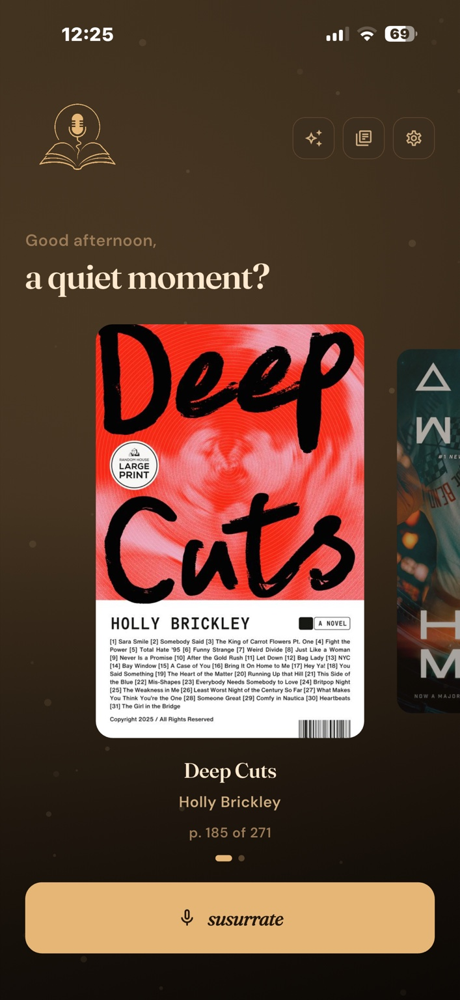

01 — A quiet moment
Home & Quick Susurrate
Susurr opens with the book you are currently reading and gives you a calm place to continue your reading habit. When a thought hits, tap susurrate and capture it before it fades.
- See your current read at a glance
- Start a reflection from the home screen
- A calm, focused space for your reading life
